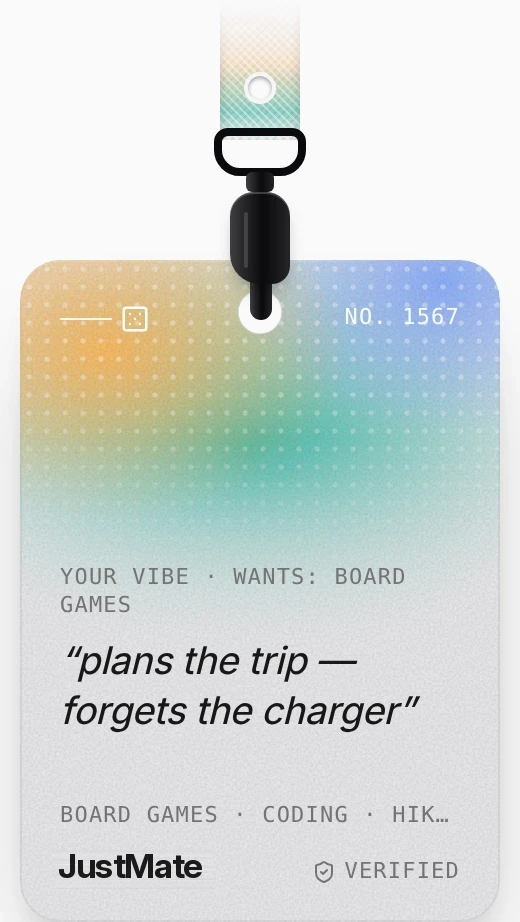
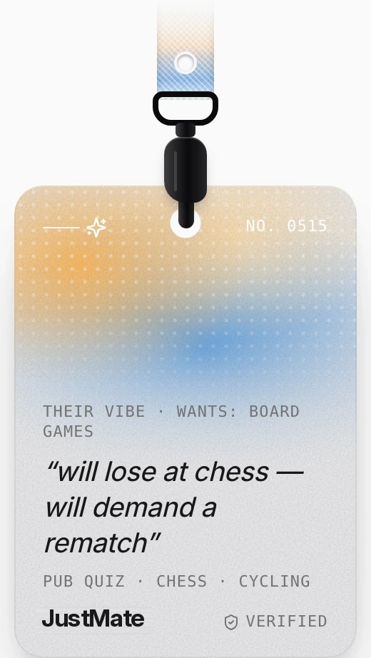
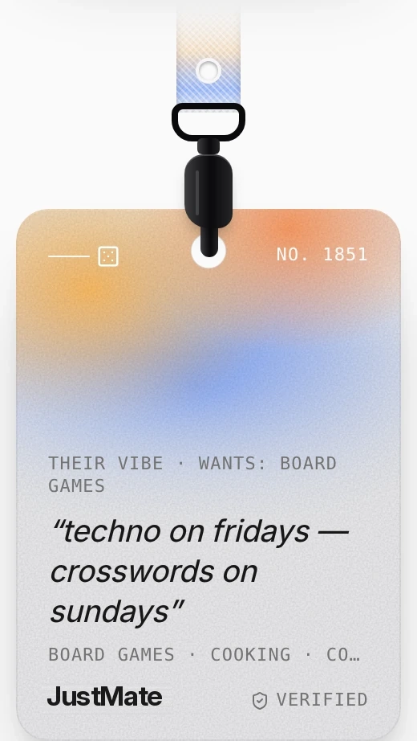

The whole funnel says it before you ever see the map. A two-minute onboarding turns your interests and a few answers into a vibe on a lanyard badge — the only thing anyone else ever sees.



badgeSeed) — no two alike. At a match you see their badge and the shared intent; nothing else.{ vibe: "techno on fridays — crosswords on sundays",
interests: ["concerts","pub quiz","coding"],
badgeSeed: 2915,
tags: { verified: true, adult: true } }
No name, no answers, no score, no position.
The map is full-screen; a single surface morphs between shapes — auth, onboarding, select, search, plans, day-of, match, compass, post-meet, settings. One primary action at a time.
Press feedback without latency, interruptible springs, translucent materials. Haptics are a language: [200,100,200] when a match lands, escalating pulses as the compass warms.
A pale greyscale map with warm amber glow, an ink match card, a night compass. Red is reserved for Vanish. English, Polish and Slovak; reduce-motion, haptics and sound switches.
The jury's first question about any proximity app is "isn't this a stalker tool?" JustMate is built so the answer is no, by construction — and for women in particular, three layers sit on top: prove you're real, meet in public, remove someone from your world in one tap. Every safety feature is free, forever.
Both are notified, both must accept before anything unlocks. A dismiss is never forwarded — the other side only sees "offer expired".
The server sends a direction and a distance bucket — never the partner's coordinates. "No pins" is enforced in the protocol, not in the UI.
The map shows aggregate warmth per zone; zones with fewer than 3 searchers stay dark (k-anonymity), so a glow never points at one person.
Nothing is discoverable until you start a search or join a plan. Search auto-stops after 30 minutes (on by default). Nobody can be searched or browsed — ever.
45-second offers, 10-minute compass sessions, a 5-minute pair cooldown. Positions live in memory per socket and are dropped when a session ends.
One tap, no confirmation: the session is destroyed for both, instantly. It looks identical whichever side pressed it.
Your data rights are endpoints, not a support ticket: GET /api/account/export returns everything stored about you; DELETE /api/account removes the user, profile, sessions and sign-in methods and closes the live socket.
| Threat | Countermeasure |
|---|---|
| Stalker follows a specific person | No identity, no search, no browsing; zones not pins; aggregate glow with k-anonymity; nothing discoverable when search is off; plans are proposed by the app, never browsable by person. |
| Compass abused to locate someone | Unlocks only after mutual accept; reveals a bearing, never a map position; 10-minute TTL; symmetric — the partner knows you're walking too. M1 meeting point first. |
| Plan used to reach a specific person | Nobody picks a person: proposals come from the model, invitations are offered by the app ("you don't pick who"); the other side sees a vibe, a place and a time; a pass is never shown. M1 people who met and didn't both keep in touch aren't grouped again for 30 days. |
| Harassment · hostile profiles | No chat, so no DM channel. Every saved profile passes OpenAI moderation; a flagged person silently drops out of matches, zones and plans. Report, from the compass or after meeting, ends the session and blocks the pair both ways, for good; the reported side is never told. |
| Serial abuser cycling matches | Two reports from different people pause the account from matching and plans at once. M1 At most 5 compass sessions a day and 3 open plans; repeated vanishes flag the account. |
| Fake or bot profiles · ban evasion | Selfie liveness check (simulated in the build); M1 one account per phone number, optional ID check, bans bound to phone and device. |
| Weaponised false reports | Auto-pause needs two independent reporters. M1 Verified reporters weigh more; a human reviews before any ban; appeal path. |
| Data breach · subpoena | Positions are never persisted; plans hold who, never where. There is nothing to leak. |
| Minors | Every profile states an age (16+). Date requires an adult, checked server-side. In Mate, a non-adult is only ever matched or grouped with another non-adult. M1 age assurance. |
| Level | Check | Stage |
|---|---|---|
| 1 · Account | Email + password or magic link | M0 |
| 2 · Phone | SMS code, one account per number (~€0.05–0.10) | M1 |
| 3 · Liveness | One selfie, deleted after the check → "verified" | sim. M1 |
| 4 · ID | Document + selfie via an ID provider (~€0.70) → "ID verified"; required to host plans | M1 |
The user never pays for a level. "Only match me with verified people" is a free filter.
In the build: Vanish, Report → block, two-report pause, moderation, age gates and support lines.
She is invisible unless she starts a search or joins a plan. She can dismiss any match invisibly — on the other side it simply "expires". Vanish is one tap and instant. Her first name appears only after she has met someone in person.
Location is personal data, so it is processed only inside an explicit, session-scoped consent and never stored. No special-category data. The photo goes to the LLM once and is not stored or logged. Production path: a DPIA before launch; the demo runs on test data only.